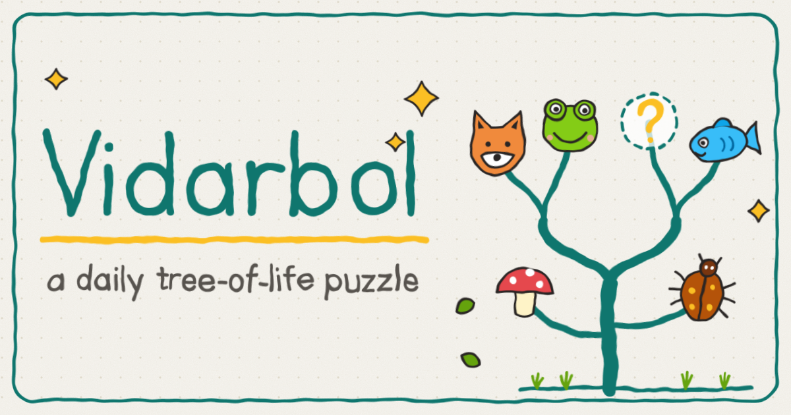
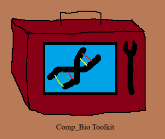
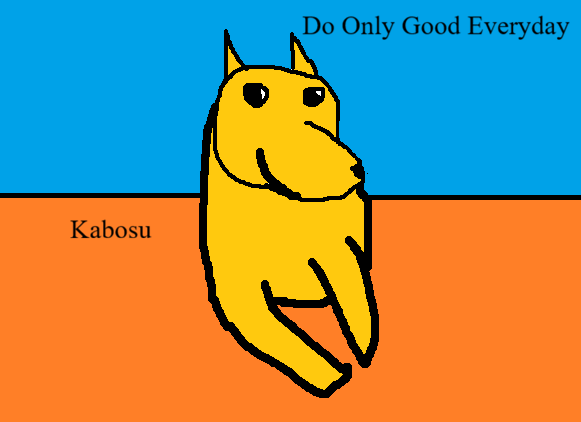

Evolution & biodiversity
How do genomes preserve evidence of ancestry, adaptation, and population history?
COMPUTATIONAL BIOLOGY · EVOLUTION
I read genomes to understand why living things differ, and I write the code to test what I find. I hold an M.Sc. in Genomic Science with two published chapters, and I build the tool myself when it does not exist.
Biology rarely provides a clean input file. I work with what I'm given.
How do genomes preserve evidence of ancestry, adaptation, and population history?
How can reproducible workflows make complex biological datasets easier to investigate?
How can statistical learning and carefully designed software help extract useful evidence?
Two book chapters, each with a persistent identifier you can follow.
IntechOpen
Bentham Science
* Full record on ORCID .
Projects across evolutionary biology and genomic analysis, with machine learning where it helps. Each entry gives its purpose and its current status.
A daily phylogeny puzzle game built around organismal relationships, taxonomy-driven puzzle generation, and a custom triplet-accuracy scoring algorithm.

A collection of Python utilities and analysis scripts covering sequence analysis, comparative genomics, transcriptomics, metagenomics, and biological network analysis.
Status Complete. New scripts are added whenever an analysis needs one.

A machine-learning framework for biological data analysis. The modelling pipeline is implemented; suitable datasets and systematic evaluation are current priorities.

A transcriptome-guided genome annotation workflow for a non-model organism, combining read alignment, transcript assembly, annotation checks, and downstream analysis.

A cardiometabolic risk interpretation prototype using synthetic longitudinal wearable data, temporal machine learning, uncertainty indicators, and constrained language-model explanations.

A workflow for viral discovery from metagenomic reads, covering quality control, assembly, viral identification, quality assessment, host prediction, and reporting.

Master's thesis at the Central University of Kerala, supervised by Dr. M. Nagarajan. A study of genetic diversity in the Indian gaur (Bos gaurus) across four states, using the mitochondrial cytochrome b gene. I did all of the work except the sequencing itself, which an external agency ran.
Result Twelve sequences gave 8 haplotypes and formed a single clade, with mithun (Bos frontalis) as the closest relative and domestic cattle clearly separate. The limits are one mitochondrial locus and a small sample, because most field DNA was too degraded to amplify.

* Project status describes the current state of implementation. Validation depth varies by project and dataset.
The last one is the only entry on this page I am actually proud of. Everything above it is a boundary I would rather state than have you discover later.
My academic training in biotechnology and genomic science informs how I approach biological data, experimental context, and evolutionary questions.
Full academic CVUNAM Institute of Biomedicine, Mexico City
Studied the role of WNT signalling in dorsal pallium regeneration in the axolotl. Ran tissue-level regeneration experiments, which built hands-on model-organism experience and a practical sense of the experimental constraints that shape downstream analysis.
Central University of Kerala, India
Master's thesis: phylogenetic characterisation of the Indian gaur (Bos gaurus) using the mitochondrial cytochrome b gene, supervised by Dr. M. Nagarajan (March to August 2022).
Amity University Kolkata, India
Undergraduate thesis: genomic analysis of Mycobacterium leprae, the leprosy-causing bacterium.